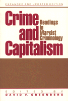

Classic and contemporary viewpoints on crime
Classic and contemporary viewpoints on crime


 Classic and contemporary viewpoints on crime
Classic and contemporary viewpoints on crime

|  |
Crime and CapitalismReadings in Marxist Crimonologyedited by David F. Greenbergpaper EAN: 978-1-56639-026-2 (ISBN: 1-56639-026-5) |
"This book is superb in every way.... [It] is the only book that attempts to put into perspective just what the possible relationship between praxis and Marxist criminology might (should) be."
—Eleanor Miller, University of Wisconsin, Milwaukee
In this expanded and updated second edition of a revered reader in Marxist criminology, editor David F. Greenberg brings together writings about crime that range from classic articles by Karl Marx and Friedrich Engels to a variety of contemporary essays. Taking an explicitly Marxist point of view, the articles deal with various aspects of criminology, including organized crime, delinquency, urban crime, criminal law, and criminal justice. To the original text, Greenberg has added pieces on race and crime, gender and crime, rape, arson for profit, and auto theft.
With extensive prefatory material prepared by Greenberg, as well as editorial notes, and a glossary of Marxist terminology, Crime and Capitalism is an indispensable text for students and professionals in the fields of criminology, criminal justice, social history, and sociology.
Preface to the Second Edition
Introduction
Part I: Marx and Engels on Crime and Punishment
1. Crime and Primitive Accumulation – Karl Marx
2. The Demoralization of the English Working Class – Freidrich Engels
3. Crime in Communist Society – Freidrich Engels
4. The Usefulness of Crime – Karl Marx
5. The Labeling of Crime – Karl Marx
6. On Capital Punishment – Karl Marx
Part II: The Causes of Crime
7. Karl Marx, the Theft of Wood, and Working-Class Composition – Peter Linebaugh
8. Goths and Vandals: Crime in History – Geoffrey Pearson
9. Hunting, Fishing, and Foraging: Common Rights and Class Relations in the Postbellum South – Steven Hahn
10. Organized Crime and Class Politics – Frank Pearce
11. Urban Crime and Capitalist Accumulation, 1950-1971 – Don Wallace and Drew Humphries
12. The Social Economy of Arson: Vandals, Gangsters, Bankers, and Officials in the Making of an Urban Problem – James Brady
13. Wealth, Crime, and Capital Accumulation – Harold Barnett
14. Auto Theft and the Role of Big Business – Harry Brill
15. The Production of Black Violence in Chicago – Cyril D. Robinson
16. Delinquency and the Age Structure of Society – David F. Greenberg
17. Rape, Sexual Inequality, and Levels of Violence – Julia Schwendinger and Herman Schwendinger
18. The Gendering of Crime in Marxist Theory – David F. Greenberg
Part III: Criminal Law and Criminal Justice
19. The Dialectics of Crime Control – Drew Humphries and David F. Greenberg
20. A Reinterpretation of Criminal Law Reform in Nineteenth-Century England – Michael Rustigan
21. The Walnut Street Jail: A Penal Reform to Centralize the Powers of the State – Paul Takagi
22. Policing a Class Society: The Expansion of the Urban Police in the Late Nineteenth and Early Twentieth Centuries – Sidney L. Harring
23. The Political Economy of Policing – Steven Spitzer
24. At Hard Labor: Penal Confinement and Production in Nineteenth-Century America – Rosalind P. Petchesky
25. Convict Leasing: An Application of the Rusche-Kirchheimer Thesis to Penal Changes in Tennessee, 1830-1915 – Randall G. Shelden
26. The Cooptation of Fixed Sentencing Reform – David F. Greenberg and Drew Humphries
27. The Enforcement of Anti-Monopoly Legislation – Harold Barnett
28. The Standards of Living in Penal Institutions – Herman Schwendinger and Julia R. Schwendinger
Part IV: Crime and Revolution: Is Crime Progressive?
29. Crime, the Crisis of Capitalism, and Social Revolution – Morton G. Wenger and Thomas A. Bonomo
30. Gangs and Progress: The Contribution of Delinquency to Progressive Reform – Evan Stark
Part V: Praxis and Marxism Criminology
Glossary
Index
David F. Greenberg is Professor of Sociology at New York University and the author of The Construction of Homosexuality.
Contributors: In addition to Marx, Engels, and the editor, the contributors are Peter Linebaugh, Geoffrey Pearson, Steven Hahn, Frank Pearce, Don Wallace, Drew Humphries, James Brady, Harold Barnett, Harry Brill, Cyril D. Robinson, Herman Schwendinger, Julia Schwendinger, Michael Rustigan, Paul Takagi, Sidney L. Harring, Steven Spitzer, Rosalind P. Petchesky, Randall G. Shelden, Morton G. Wenger, Thomas A. Bonomo, and Evan Stark.
© 2015 Temple University. All Rights Reserved. This page: http://www.temple.edu/tempress/titles/685_reg.html.